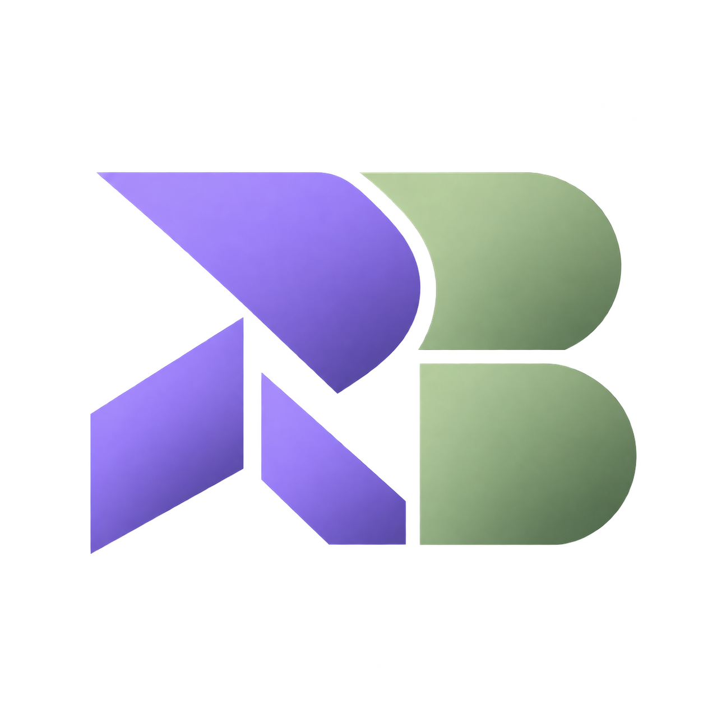

DATA, CODE & USEFUL THINGS

Rather Builds.
I’m Adil Hassan Rather, a computer science graduate focused on data science and analytics. I connect data, code and AI-assisted development to build useful digital tools.
Data scienceAnalyticsWeb & apps
A personal space by Adil Hassan Rather
Say hello
A LITTLE DIRECTORY
Explore the work.
The portfolio, current projects, free resources and a few ways to stay connected. All in one place.